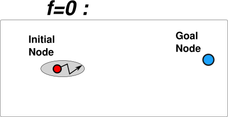
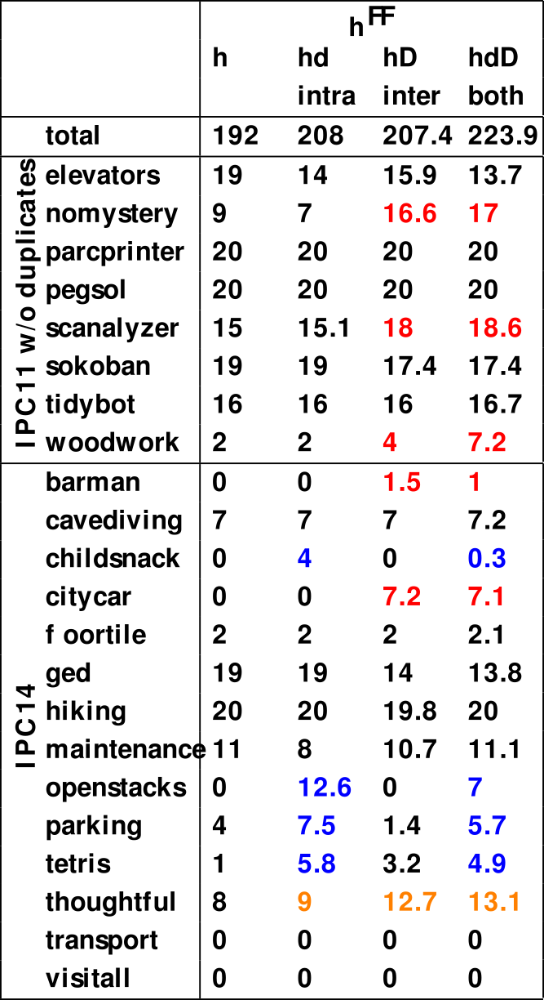
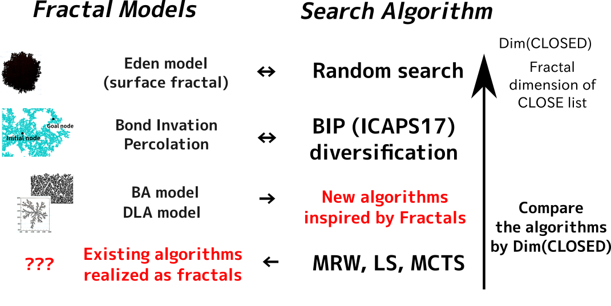
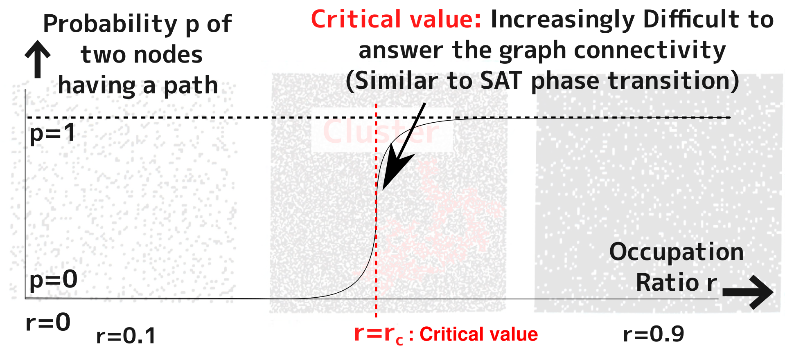

Exploiting Search Space Structure in Classical Planning: Analyses and Algorithms (DC talk)
Masataro Asai
Final year in Ph.D program (1 years to go)
University of Tokyo
13 min.
Made by guicho2.71828 (Masataro Asai)
1 Introduction & Motivation
There are too many algorithms!
(A*, LA*, PEA*, GBFS, LS, MRW, MCTS, RRT… LAMA, probe, etc…)
- Theoretical but qualitative property : (Probabilistic) Completeness, Optimality
- e.g. If it is incomplete, how incomplete it is?
- Lacks the quantitative continuum : How/Why they differ, measured by numbers (not performance)
- Theoretical but qualitative property : (Probabilistic) Completeness, Optimality
Can we describe the behavior of various algorithms uniquely in a simple measure?
2 The Problems
- Different classes of algorithms (optimal vs. satisficing search)
- Different theoretical requirements
2.1 A* (optimal search) works as follows
Expands the nodes in increasing order of f value

2.1.1 A* (optimal search) works as follows
Expands the nodes in increasing order of f value
2.1.2 A* (optimal search) works as follows
Expands the nodes in increasing order of f value
2.1.3 A* (optimal search) works as follows
Expands the nodes in increasing order of f value
- The order of expansion in each plateau does not matter for the optimality
- In each plateau, the path can be arbitrarily long
- We are runnning a satisficing search on each plateau
2.2 Reinterpret A∗ as iterations of satisficing search on plateaus (JAIR17, HSDIP17)
- A* $[ f, h, \text{fifo} ]$: Performing GBFS $[ h, \text{fifo} ]$on each plateau(f)
- A* $[ f, \text{fifo} ]$: Blind breadth-first search $[ \text{fifo} ]$on each plateau(f) → slower
while true satisficing_search( plateau(f)) if plateau (f) is SAT; then return solution else Increase f
2.2.1 A* as satisficing search (JAIR17, HSDIP17)
while true satisficing_search( plateau(f)) if plateau (f) is SAT; then return solution else Increase f
2.2.2 A* as satisficing search (JAIR17, HSDIP17)
while true satisficing_search( plateau(f)) if plateau (f) is SAT; then return solution else Increase f
2.2.3 A* as satisficing search (JAIR17, HSDIP17)
while true satisficing_search( plateau(f)) if plateau (f) is SAT; then return solution else Increase f
2.2.4 A* as satisficing search (JAIR17, HSDIP17)
while true satisficing_search( plateau(f)) if plateau (f) is SAT; then return solution else Increase f
Implication:
- Any complete satisficing technique can be embedded in optimal planning
- We evaluated several instances and improved the performance
- Results are optimal as long as f is admissible
- Now forget about optimal, let's focus on satisficing
3 The Problems
- Different classes of algorithms (optimal vs. satisficing search) DONE
- Different theoretical requirements
- The behavior might be affected by the heuristic functions
- Not able to discuss the algorithm behavior
3.1 Heuristic Satisficing Search
Less requirements → a larger variety of algorithms & ad-hoc ness
| Purposes | Approach | Affect $h$? |
|---|---|---|
| Minimize the cost of eval. | Lazy Eval | ○ |
| Avoid local minima | Randomization | ✗ |
| Escaping local minima | Local Search | ✗ |
| Preferred Ops | ✗ |
Lazy Eval == using a different heuristics
Other methods (avoidance, escape) are Search Diversification
Thus we focus on Search Diversification
3.2 Search Diversification

3.2.1 Search Diversification
3.2.2 Search Diversification
3.2.3 Search Diversification
3.2.4 Search Diversification
3.2.5 Search Diversification
3.3 Two modes of diversification : Intra-plateau and Inter-plateau (ICAPS17)
Previous work have the mixed effect of both (e.g. GBFS-LE)
3.4 Intra-vs-Inter are orthogonal & complementary

- With both modes enabled, effects combine
- Both modes are based on a knowledge-free (blind) method
- Now we no longer have to care about heuristics!
4 The Problems
- Different classes of algorithms (optimal vs. satisficing search) DONE
- Different theoretical requirements
- The behavior might be affected by the heuristic functions DONE
- Not able to discuss the algorithm behavior
- Simply wide variety of algorithms
- Methods for analysis should be sufficiently general
4.1 Analyzing the blind search behavior
What do we know about blind search? — not much
- Search depth, branching factor
- but they do not describe the actual "shape" of the resulting graph
- In a representation-independent way — for continuous domains (e.g. RRT)
4.2 Fractals
Infinite fractals

Random fractals (our focus)
4.3 Fractal Dimension
A real number characterizing each shape
- How the number of points react to the different scaling
- Represent the sparseness of a shape wrto space dimension
Note: Complicated measure theory involved, we don't have to deal with the details
4.4 Bond Invasion Percolation (ICAPS17)
A practical diversification for Classical Planning
4.5 Improves the performance as a diversification method (ICAPS17)
Benchmark on FF heuristic
| Diversified FBFS | IPC11+IPC14 score |
|---|---|
| Baseline | 192 |
| (inter + intra plateau) Type-based | 223.9 |
| (inter + intra plateau) BIP | 237.7 |
4.6 Search algorithm == Generator of a (random) fractal
4.6.1 Search algorithm == Generator of a (random) fractal
4.7 Analysing Various Search Algorithms as Fractals

4.8 Example: Understanding the min. sparseness
5 Conclusion
- Unified Search TheoryTM:
(JAIR17) Optimal search (A*)
→ a sequence of satisficing search
(ICAPS17) Satisficing heuristic search
→ a combination of blind searches
- (ICAPS17++) Fractals: Mathematical tools for blind search
- I have a lot other topics too! (visit my KEPS talk for DLNN+Planning)
6 Old materials
6.1 Proposal: Unifying Framework for Analyzing Search Space
6.2 Proposal: Unifying Framework for Analyzing Search Space
6.3 Proposal: Unifying Framework for Analyzing Search Space
6.4
Percolation Theory
6.4.1 Example: Percolation in 2-dimentional grids
A node is either occupied or unoccupied

- Key interst: when/how a graph percolates?
6.4.2 Bond (edge) / Site (node) percolation
6.4.3 Percolation described by occupation ratio r
6.4.4 Percolation described by occupation ratio r
6.4.5 Percolation described by occupation ratio r
6.4.6 Percolation described by occupation ratio r
Generates a connected cluster with complex shape
6.4.7 Phase Transition

6.4.8 Macros may be shifting the ratio to the right
6.4.9 Forward Search : Increasing r as the search progresses
6.4.10 Open Questions
- Prove the connection between macro-operators and critical value
- I am testing if randomly generated Junk Macros improve the performance
- Ongoing work — positive results (next slide)
- I am testing if randomly generated Junk Macros improve the performance
- How existing macro-approaches change the connectivity?
- MacroFF(Botea05), Marvin(Coles04,07) MUM(Chrpa14), CAP(Asai15), BLOMA(Siddiqui15)
- What is the rc of each domain?
- critical value of Logistics is X, Barman is Y …
- At which r does each search algorithm find a solution?
- Lookahead search, GBFS, Type-GBFS, A*, Random Walk…
6.4.10.1 Preliminary results on Junk Macros
Promising direction!
6.5 Unifying Framework for Analyzing Search Space
6.6
Fractals
No time, only described briefly
6.6.1 Fractals
Sierpinsky's Gasket, Tree (L-system), Koch Curve
6.6.2 Fractal Dimension: How many nodes are included when the scale changes?
Takes Fractional value; != Space Dimension
6.6.3 Fractals are defined by generative rules: example
6.6.4 Fractals are defined by generative rules: example
6.6.5 Fractals are defined by generative rules: example
6.6.6 Search space is also defined by expansion rules
6.6.7 Connections between Fractals and Search Algorithms
6.6.8 Connections between Fractals and Search Algorithms
6.6.9 Connections between Fractals and Search Algorithms
6.6.10 Connections between Fractals and Percolation
6.7 Unifying Framework for Analyzing Search Space
6.8 Conclusion: Thesis Abstract
- Establish a framework for analysing the search behavior based on percolation theory
- Propose paper 1,2,3
- Analyze paper 1,2,3 using percolation theory
- Macro operators in paper 1,2
- Tiebreaking mechanism in paper 3
- Give an answer to why paper 1,2,3 perform good
→ Unified, consistent thesis!
Thank you for listening!